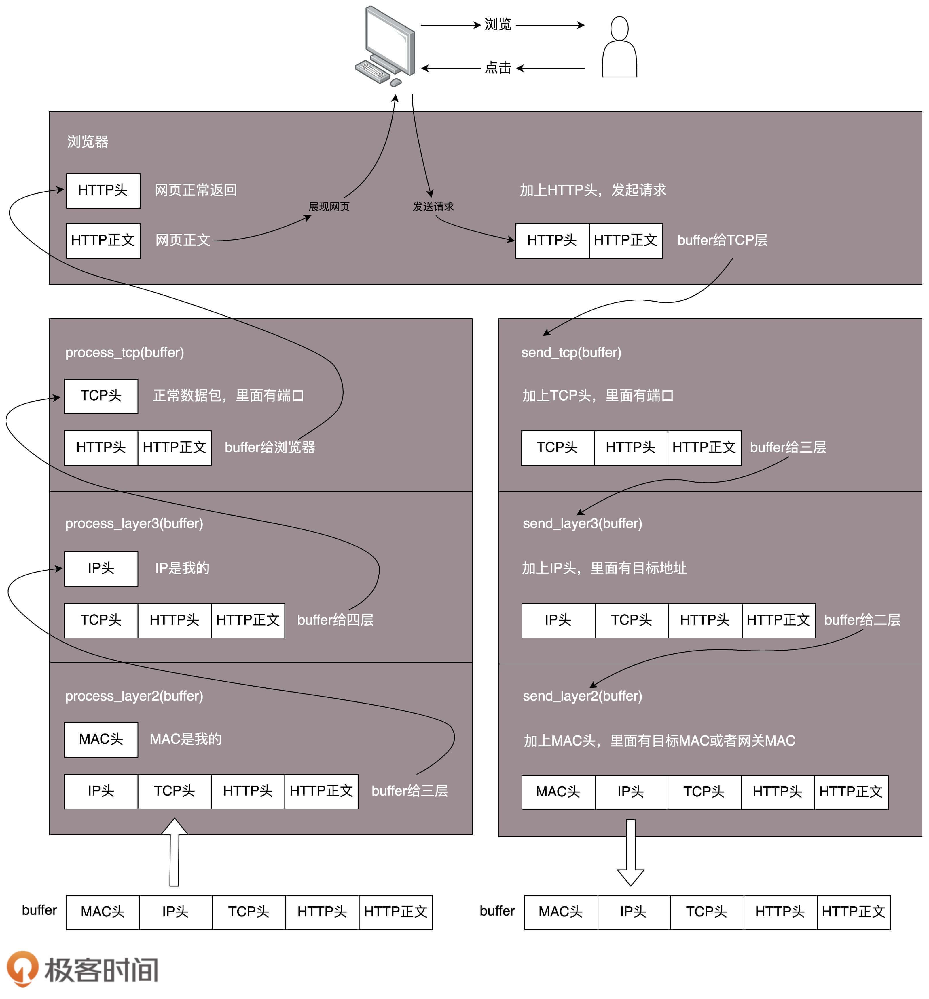

- 00 开篇词 想成为技术牛人？先搞定网络协议！.md
- 01 为什么要学习网络协议？.md
- 02 网络分层的真实含义是什么？.md
- 03 ifconfig：最熟悉又陌生的命令行.md
- 04 DHCP与PXE：IP是怎么来的，又是怎么没的？.md
- 05 从物理层到MAC层：如何在宿舍里自己组网玩联机游戏？.md
- 06 交换机与VLAN：办公室太复杂，我要回学校.md
- 07 ICMP与ping：投石问路的侦察兵.md
- 08 世界这么大，我想出网关：欧洲十国游与玄奘西行.md
- 09 路由协议：西出网关无故人，敢问路在何方.md
- 10 UDP协议：因性善而简单，难免碰到“城会玩”.md
- 11 TCP协议（上）：因性恶而复杂，先恶后善反轻松.md
- 12 TCP协议（下）：西行必定多妖孽，恒心智慧消磨难.md
- 13 套接字Socket：Talk is cheap, show me the code.md
- 14 HTTP协议：看个新闻原来这么麻烦.md
- 15 HTTPS协议：点外卖的过程原来这么复杂.md
- 16 流媒体协议：如何在直播里看到美女帅哥？.md
- 17 P2P协议：我下小电影，99%急死你.md
- 18 DNS协议：网络世界的地址簿.md
- 19 HttpDNS：网络世界的地址簿也会指错路.md
- 20 CDN：你去小卖部取过快递么？.md
- 21 数据中心：我是开发商，自己拿地盖别墅.md
- 22 VPN：朝中有人好做官.md
- 23 移动网络：去巴塞罗那，手机也上不了脸书.md
- 24 云中网络：自己拿地成本高，购买公寓更灵活.md
- 25 软件定义网络：共享基础设施的小区物业管理办法.md
- 26 云中的网络安全：虽然不是土豪，也需要基本安全和保障.md
- 27 云中的网络QoS：邻居疯狂下电影，我该怎么办？.md
- 28 云中网络的隔离GRE、VXLAN：虽然住一个小区，也要保护隐私.md
- 29 容器网络：来去自由的日子，不买公寓去合租.md
- 30 容器网络之Flannel：每人一亩三分地.md
- 31 容器网络之Calico：为高效说出善意的谎言.md
- 32 RPC协议综述：远在天边，近在眼前.md
- 33 基于XML的SOAP协议：不要说NBA，请说美国职业篮球联赛.md
- 34 基于JSON的RESTful接口协议：我不关心过程，请给我结果.md
- 35 二进制类RPC协议：还是叫NBA吧，总说全称多费劲.md
- 36 跨语言类RPC协议：交流之前，双方先来个专业术语表.md
- 37 知识串：用双十一的故事串起碎片的网络协议（上）.md
- 38 知识串：用双十一的故事串起碎片的网络协议（中）.md
- 39 知识串：用双十一的故事串起碎片的网络协议（下）.md
- 40 搭建一个网络实验环境：授人以鱼不如授人以渔.md
- 加餐1 创作故事：我是如何创作“趣谈网络协议”专栏的？.md
- 协议专栏特别福利 答疑解惑1期.md
- 协议专栏特别福利 答疑解惑2期.md
- 协议专栏特别福利 答疑解惑3期.md
- 协议专栏特别福利 答疑解惑4期.md
- 协议专栏特别福利 答疑解惑5期.md
- 结束语 放弃完美主义，执行力就是限时限量认真完成.md
02 网络分层的真实含义是什么？
长时间从事计算机网络相关的工作，我发现，计算机网络有一个显著的特点，就是这是一个不仅需要背诵，而且特别需要将原理烂熟于胸的学科。很多问题看起来懂了，但是就怕往细里问，一问就发现你懂得没有那么透彻。
我们上一节列了之后要讲的网络协议。这些协议本来没什么稀奇，每一本教科书都会讲，并且都要求你背下来。因为考试会考，面试会问。可以这么说，毕业了去找工作还答不出这类题目的，那你的笔试基本上也就挂了。
当你听到什么二层设备、三层设备、四层LB和七层LB中层的时候，是否有点一头雾水，不知道这些所谓的层，对应的各种协议具体要做什么“工作”？
这四个问题你真的懂了吗？
因为教科书或者老师往往会打一个十分不恰当的比喻：为什么网络要分层呀？因为不同的层次之间有不同的沟通方式，这个叫作协议。例如，一家公司也是分“层次”的，分总经理、经理、组长、员工。总经理之间有他们的沟通方式，经理和经理之间也有沟通方式，同理组长和员工。有没有听过类似的比喻？
那么第一个问题来了。请问经理在握手的时候，员工在干什么？很多人听过TCP建立连接的三次握手协议，也会把它当知识点背诵。同理问你，TCP在进行三次握手的时候，IP层和MAC层对应都有什么操作呢？
除了上面这个不恰当的比喻，教科书还会列出每个层次所包含的协议，然后开始逐层地去讲这些协议。但是这些协议之间的关系呢？却很少有教科书会讲。
学习第三层的时候会提到，IP协议里面包含目标地址和源地址。第三层里往往还会学习路由协议。路由就像中转站，我们从原始地址A到目标地址D，中间经过两个中转站A->B->C->D，是通过路由转发的。
那么第二个问题来了。A知道自己的下一个中转站是B，那从A发出来的包，应该把B的IP地址放在哪里呢？B知道自己的下一个中转站是C，从B发出来的包，应该把C的IP地址放在哪里呢？如果放在IP协议中的目标地址，那包到了中转站，怎么知道最终的目的地址是D呢？
教科书不会通过场景化的例子，将网络包的生命周期讲出来，所以你就会很困惑，不知道这些协议实际的应用场景是什么。
我再问你一个问题。你一定经常听说二层设备、三层设备。二层设备处理的通常是MAC层的东西。那我发送一个HTTP的包，是在第七层工作的，那是不是不需要经过二层设备？或者即便经过了，二层设备也不处理呢？或者换一种问法，二层设备处理的包里，有没有HTTP层的内容呢？
最终，我想问你一个综合的问题。从你的电脑，通过SSH登录到公有云主机里面，都需要经历哪些过程？或者说你打开一个电商网站，都需要经历哪些过程？说得越详细越好。
实际情况可能是，很多人回答不上来。尽管对每一层都很熟悉，但是知识点却串不起来。
上面的这些问题，有的在这一节就会有一个解释，有的则会贯穿我们整个课程。好在后面一节中我会举一个贯穿的例子，将很多层的细节讲过后，你很容易就能把这些知识点串起来。
网络为什么要分层？
这里我们先探讨第一个问题，网络为什么要分层？因为，是个复杂的程序都要分层。
理解计算机网络中的概念，一个很好的角度是，想象网络包就是一段Buffer，或者一块内存，是有格式的。同时，想象自己是一个处理网络包的程序，而且这个程序可以跑在电脑上，可以跑在服务器上，可以跑在交换机上，也可以跑在路由器上。你想象自己有很多的网口，从某个口拿进一个网络包来，用自己的程序处理一下，再从另一个网口发送出去。
当然网络包的格式很复杂，这个程序也很复杂。复杂的程序都要分层，这是程序设计的要求。比如，复杂的电商还会分数据库层、缓存层、Compose层、Controller层和接入层，每一层专注做本层的事情。
程序是如何工作的？
我们可以简单地想象“你”这个程序的工作过程。

当一个网络包从一个网口经过的时候，你看到了，首先先看看要不要请进来，处理一把。有的网口配置了混杂模式，凡是经过的，全部拿进来。
拿进来以后，就要交给一段程序来处理。于是，你调用process_layer2(buffer)。当然，这是一个假的函数。但是你明白其中的意思，知道肯定是有这么个函数的。那这个函数是干什么的呢？从Buffer中，摘掉二层的头，看一看，应该根据头里面的内容做什么操作。
假设你发现这个包的MAC地址和你的相符，那说明就是发给你的，于是需要调用process_layer3(buffer)。这个时候，Buffer里面往往就没有二层的头了，因为已经在上一个函数的处理过程中拿掉了，或者将开始的偏移量移动了一下。在这个函数里面，摘掉三层的头，看看到底是发送给自己的，还是希望自己转发出去的。
如何判断呢？如果IP地址不是自己的，那就应该转发出去；如果IP地址是自己的，那就是发给自己的。根据IP头里面的标示，拿掉三层的头，进行下一层的处理，到底是调用process_tcp(buffer)呢，还是调用process_udp(buffer)呢？
假设这个地址是TCP的，则会调用process_tcp(buffer)。这时候，Buffer里面没有三层的头，就需要查看四层的头，看这是一个发起，还是一个应答，又或者是一个正常的数据包，然后分别由不同的逻辑进行处理。如果是发起或者应答，接下来可能要发送一个回复包；如果是一个正常的数据包，就需要交给上层了。交给谁呢？是不是有process_http(buffer)函数呢？
没有的，如果你是一个网络包处理程序，你不需要有process_http(buffer)，而是应该交给应用去处理。交给哪个应用呢？在四层的头里面有端口号，不同的应用监听不同的端口号。如果发现浏览器应用在监听这个端口，那你发给浏览器就行了。至于浏览器怎么处理，和你没有关系。
浏览器自然是解析HTML，显示出页面来。电脑的主人看到页面很开心，就点了鼠标。点击鼠标的动作被浏览器捕获。浏览器知道，又要发起另一个HTTP请求了，于是使用端口号，将请求发给了你。
你应该调用send_tcp(buffer)。不用说，Buffer里面就是HTTP请求的内容。这个函数里面加一个TCP的头，记录下源端口号。浏览器会给你目的端口号，一般为80端口。
然后调用send_layer3(buffer)。Buffer里面已经有了HTTP的头和内容，以及TCP的头。在这个函数里面加一个IP的头，记录下源IP的地址和目标IP的地址。
然后调用send_layer2(buffer)。Buffer里面已经有了HTTP的头和内容、TCP的头，以及IP的头。这个函数里面要加一下MAC的头，记录下源MAC地址，得到的就是本机器的MAC地址和目标的MAC地址。不过，这个还要看当前知道不知道，知道就直接加上；不知道的话，就要通过一定的协议处理过程，找到MAC地址。反正要填一个，不能空着。
万事俱备，只要Buffer里面的内容完整，就可以从网口发出去了，你作为一个程序的任务就算告一段落了。
揭秘层与层之间的关系
知道了这个过程之后，我们再来看一下原来困惑的问题。
首先是分层的比喻。所有不能表示出层层封装含义的比喻，都是不恰当的。总经理握手，不需要员工在吧，总经理之间谈什么，不需要员工参与吧，但是网络世界不是这样的。正确的应该是，总经理之间沟通的时候，经理将总经理放在自己兜里，然后组长把经理放自己兜里，员工把组长放自己兜里，像套娃娃一样。那员工直接沟通，不带上总经理，就不恰当了。
现实生活中，往往是员工说一句，组长补充两句，然后经理补充两句，最后总经理再补充两句。但是在网络世界，应该是总经理说话，经理补充两句，组长补充两句，员工再补充两句。
那TCP在三次握手的时候，IP层和MAC层在做什么呢？当然是TCP发送每一个消息，都会带着IP层和MAC层了。因为，TCP每发送一个消息，IP层和MAC层的所有机制都要运行一遍。而你只看到TCP三次握手了，其实，IP层和MAC层为此也忙活好久了。
这里要记住一点：只要是在网络上跑的包，都是完整的。可以有下层没上层，绝对不可能有上层没下层。
所以，对TCP协议来说，三次握手也好，重试也好，只要想发出去包，就要有IP层和MAC层，不然是发不出去的。
经常有人会问这样一个问题，我都知道那台机器的IP地址了，直接发给他消息呗，要MAC地址干啥？这里的关键就是，没有MAC地址消息是发不出去的。
所以如果一个HTTP协议的包跑在网络上，它一定是完整的。无论这个包经过哪些设备，它都是完整的。
所谓的二层设备、三层设备，都是这些设备上跑的程序不同而已。一个HTTP协议的包经过一个二层设备，二层设备收进去的是整个网络包。这里面HTTP、TCP、 IP、 MAC都有。什么叫二层设备呀，就是只把MAC头摘下来，看看到底是丢弃、转发，还是自己留着。那什么叫三层设备呢？就是把MAC头摘下来之后，再把IP头摘下来，看看到底是丢弃、转发，还是自己留着。
小结
总结一下今天的内容，理解网络协议的工作模式，有两个小窍门：
- 始终想象自己是一个处理网络包的程序：如何拿到网络包，如何根据规则进行处理，如何发出去；
- 始终牢记一个原则：只要是在网络上跑的包，都是完整的。可以有下层没上层，绝对不可能有上层没下层。
最后，给你留两个思考题吧。
- 如果你也觉得总经理和员工的比喻不恰当，你有更恰当的比喻吗？
- 要想学习网络协议，IP这个概念是最最基本的，那你知道如何查看IP地址吗？
欢迎你留言和我讨论。趣谈网络协议，我们下期见！
© 2019 - 2023 Liangliang Lee. Powered by gin and hexo-theme-book.